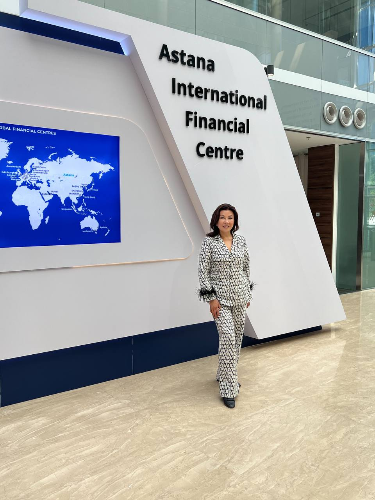
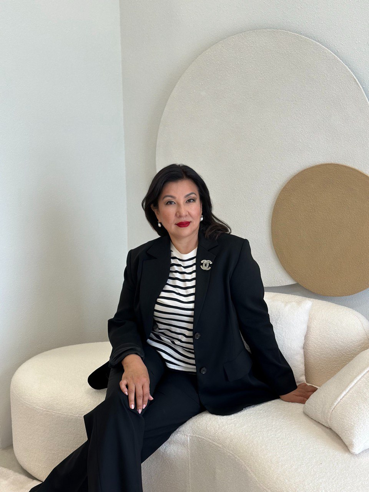
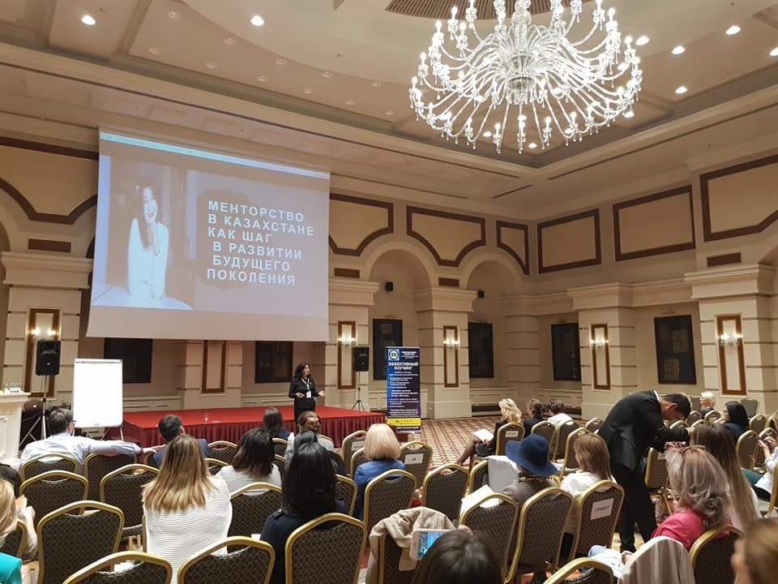
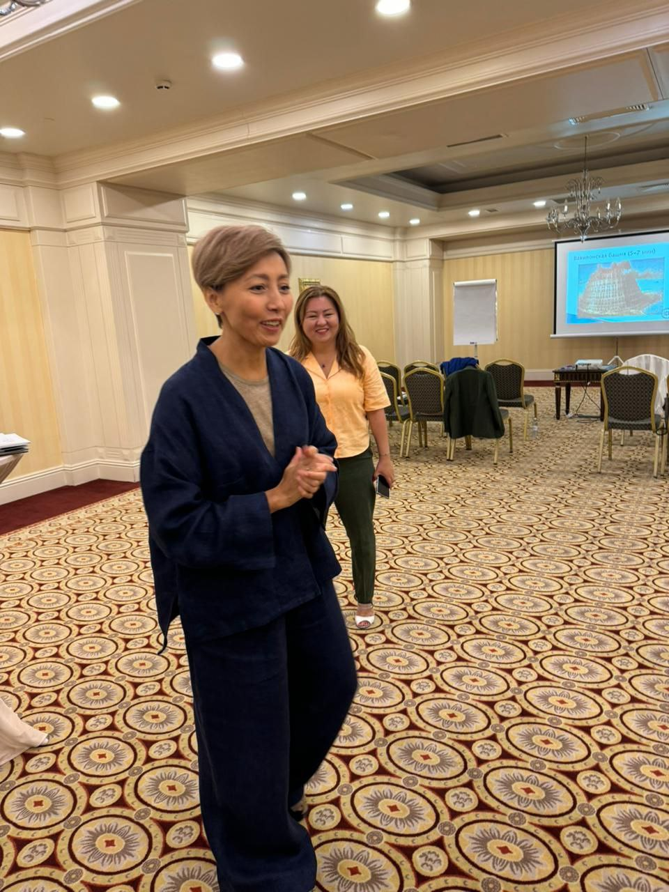
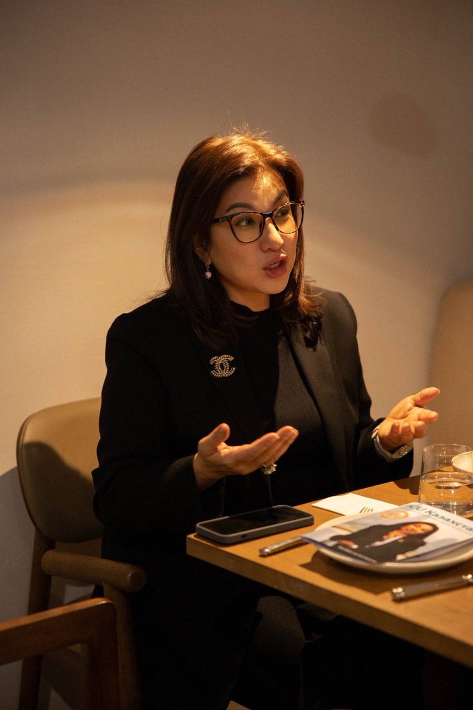
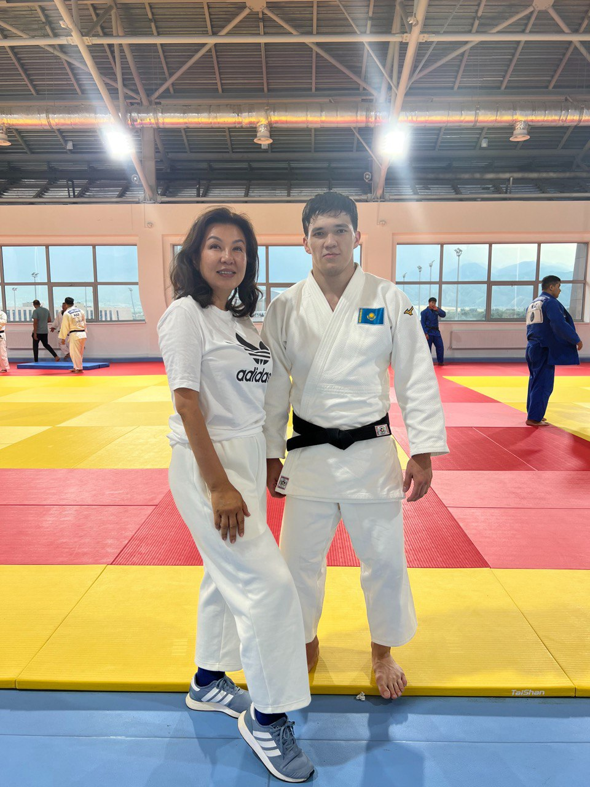
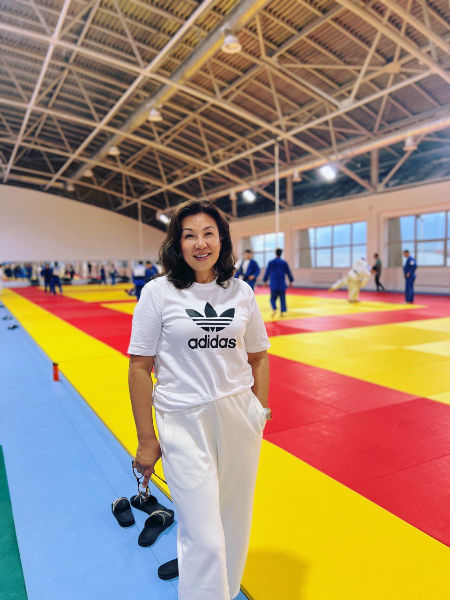
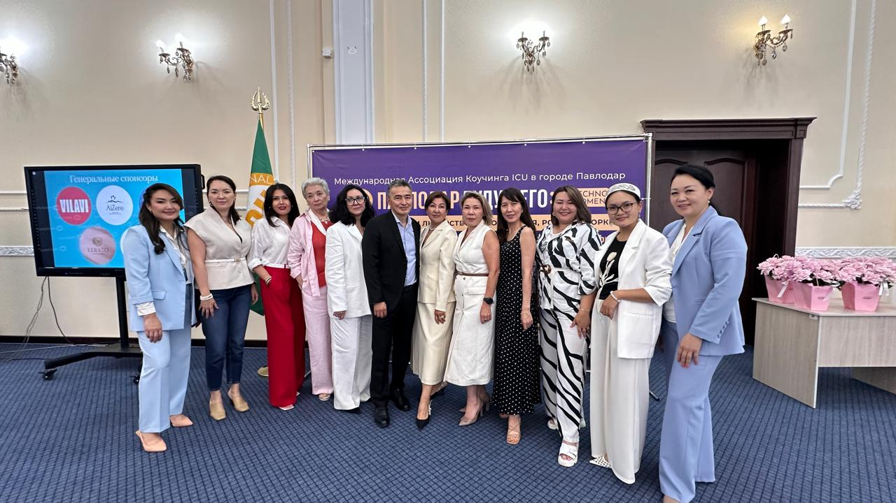

Коуч первых руководителей · со-основатель Tumar Family Office · автор Vibe42
Быть вкладом в других людей

ПрофильНурбекова Галия Багдатовна. Психолог, бизнес-тренер, мастер-коуч. Эксперт по коучингу, лидерству и семейному капиталу.
Единственный коуч из Казахстана и Центральной Азии со статусом почётного члена ICU.
Более 27 лет в управлении и более 13 лет в развитии коучинга, психологического сопровождения и образовательных технологий. Магистр психологии и педагогики, доцент; автор сертификационных программ по коучингу для преподавателей вузов.
Награждена Министерством науки и высшего образования РК, звание почётного работника сферы образования. Под её руководством открыты девять региональных филиалов ICU в Казахстане. Личные гранты на обучение профессии — 23 млн тенге.
Президент Международной Ассоциации ICU (International Coach Union) в РК и Средней Азии
Со-основатель Tumar Family Office — партнёр, Executive-консультант глав семей
Психолог, бизнес-тренер, тренер ДМД; ученица академика В. В. Козлова
Преподаватель Академии госуправления при Президенте РК («Руководитель новой формации», MBA)
Мастер-коуч ICU; бизнес-тренер по коучингу ICU/ICTA; мастер-коуч первых руководителей
Трансформатор команд — создаёт команды изменений
Внедрила коучинг в Академию госуправления; соразработчик профстандарта коуча в РК
Спикер форумов и конференций, в том числе экономического форума и BeWoman
Награждена Министерством науки и высшего образования РК; звание почётного работника сферы образования
Со-основатель и партнёр. Создание, сохранение и защита ценностей и семейного благосостояния. Миссия — защита и управление благосостоянием семьи на 3–5 поколений вперёд.
Со-основатель · партнёрОдин из авторов. Программа освоения AI-инструментов и вайбкодинга; более 600 участников; выход до 400 человек в месяц в компаниях группы «Самрук-Қазына».
Автор программыПрезидент Международной Ассоциации ICU в РК и Средней Азии. Под её руководством открыты девять региональных филиалов.
ПрезидентОснователь. Первая в РК онлайн-школа с аккредитацией ICU и первая школа коучинга на казахском языке.
ОсновательХочешь изменить мир — измени себя






Это программа не про искусственный интеллект — она про веру человека в то, что он способен создавать.
Я — один из авторов программы Vibe42. Через неё прошли более 600 участников: сотрудники Казахтелекома, представители бизнеса, студенты, врачи, инженеры, преподаватели, руководители и пенсионеры.
Новый этап — до 400 человек ежемесячно в компаниях группы «Самрук-Қазына» по каскадной модели обучения.